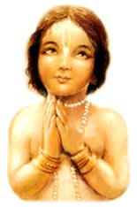

Prayers to Lord Krishna  smrite sakala-kalyana "I take shelter of Lord Hari, who is the unborn, eternal Supreme Personality of Godhead. Upon remembering Him, a reservoir of all auspiciousness is produced." (Om) yam brahma vedanta-vido vadanti "Obeisances unto Him who is the destroyer of all obstacles, who the knowers of Vedanta describe as the Supreme Brahman, and who others describe as the pradhana, or totality of mundane elements. Some describe Him as the supreme male person, or purusha, while others describe Him as the Supreme Lord and the cause of the creation of the universe." (Vishnu Purana) om tad vishnoh paramam padam sada "Just as the sun's rays in the sky are extended to the mundane vision, so in the same way the wise and learned devotees always see the supreme abode of Lord Vishnu. Because those highly praiseworthy and spiritually awake brahmanas are able to see the spiritual world, they are also able to reveal that supreme abode of Lord Vishnu." (Rig Veda 1.22.20) om krishno vai sac-cid-ananda-ghanaha krishna adi-purushaha "Lord Krishna is the color of a new rain cloud, therefore He is compared to a transcendental cloud full of eternity, bliss and cognizance. He is the original and supreme person. He is the origin of all activities and the one and only Lord of all. He is the worshipful Lord of the best of demigods, the controller of Brahma, Vishnu and Shiva. Krishna is without any beginning. Whatever auspiciousness is found within or beyond this universe the devotee obtains in Krishna alone" (Rig Veda, Krishna Upanishad) (Om) madhavo madhavo vaci "Lord Madhava is in one's words and Lord Madhava is in one's heart. All the saintly persons remember Lord Madhava, the husband of the goddess of fortune, in all their undertakings." (Narasimha Purana) (Om) svasti no govindah svasti no 'cyutanantau "May Lord Govinda, Acyuta, Ananta Shesha, Vasudeva and Lord Vishnu bestow auspiciousness upon us. May Nara-Narayana, Padmanabha and Purushottama bestow auspiciousness upon us. May Vishvaksena, the Lord of the universe, Hrishikesh and Lord Hari bestow auspiciousness upon us. May Garuda and the son of Anjana, who is the great devotee of Lord Rama, Hanuman, bestow auspiciousness upon us. May the great and only Lord of auspiciousness, Sri Krishna, who is like a transcendental cloud full of eternity, knowledge and bliss and who is the Lord of all the demigods, bestow upon us all prosperity and auspiciousness." (Rig Veda, Krishna Upanishad) karotu svasti me krishnaha "May Lord Krishna, the Lord of the demigods, the presiding controller of all the worlds, bestow auspiciousness upon me. May His devotees, who are the saviors of all people, bestow benedictions of auspiciousness upon me." (Sammohana Tantra) krishno mamaiva sarvatra "May Lord Krishna along with His beloved Radha bring about prosperity and auspiciousness at all times. In the same way may the devotee of Krishna, who is able to destroy all obstacles, always bring about auspiciousness." (Vishnu Yamala Samhita)
Atharva Vediya Gopala-tapani Upanishad, Purva Vibhaga, om namo vishva-rupaya "Lord Brahma, speaking to the great sages and saints, prayed to Lord Krishna as follows: I offer my humble obeisances to Lord Krishna, who is the giver of pleasure to the cows, whose external form is the form of the universe, who is the cause of the maintenance and dissolution of the material universe, and who is the Lord of the universe." namo vijnana-rupaya "I offer my obeisances to Lord Krishna, who is the giver of pleasure to the cows, who is the Lord of the gopis and who is the embodiment of unlimited knowledge and the highest bliss." namah kamala-netraya "I offer my obeisances to Krishna, who possesses lotus-petal eyes, who wears a garland of sweet-smelling lotus flowers, who has a lotus navel and who is the Lord of the gopis, who are as beautiful as lotus flowers." barhapidabhiramaya "I offer my obeisances to Lord Govinda, who looks very beautiful wearing a peacock feather upon His head. His plenary expansion is Lord Ramachandra, His intelligence is eternal and ever-fresh, and He is the swan that swims in the mind of Lakshmi-devi." kamsa-vamsha-vinashaya "I offer my obeisances unto Krishna, who is the destroyer of the dynasties of demons headed by King Kamsa. He is the slayer of the Keshi demon and the wrestler Chanura. He is offered prayers by Lord Shiva, whose chariot flag is marked with the insignia of Nandi, the bull, and He is the chariot driver of the son of Pritha, Arjuna." "I offer my obeisances to Krishna, who is accustomed to playing on a flute, who is the protector of the cows and the chastiser of the Kaliya serpent. He is fond of wandering here and there on the banks of the Yamuna and He is beautified by wearing swinging earrings." ballavi-vadanambhoja- "I offer my obeisances again and again unto Shri Krishna, who wears a garland of kisses from the lotus mouths of the gopis. He is conversant with the art of dancing and is the protector of the surrendered souls." namah papa-pranashaya "I offer my obeisances unto Lord Krishna, who is the destroyer of the sins of the fallen souls. He is the lifter of Govardhan Hill, He brought about the end to the life of Putana and He took away the life of the demon Trinavarta." "I offer my humble obeisances again and again unto the great Lord Krishna, who is beyond the illusion of maya and from whom that illusion comes. He is the supreme pure, the enemy of the demons and is one without a second." prasida paramananda "O Supreme Lord, O reservoir of the highest pleasure, be pleased upon me. I have been bitten by the poisonous snake of mental and bodily miseries. Therefore, O Lord, please deliver me." shri-krishna rukmini-kanta "O Lord Krishna, O lover of Rukmini, O attractor of the minds of the gopis, please uplift me, for I am immersed in the ocean of birth and death, O spiritual preceptor of the universe." keshava klesha-harana "O Lord Keshava, O destroyer of the three-fold miseries, O only refuge of all souls, O destroyer of the Jana demons, O Govinda, O reservoir of pleasure, please uplift me who am fallen, O husband of the goddess of fortune." he krishna karuna-sindho "O my dear Krishna, You are the friend of the distressed, the ocean of mercy, and the Lord of creation. You are the master of the cowherdsmen and the lover of the gopis, especially Radharani. I offer my respectful obeisances unto You."
Mere Man Mandir This song prays that Lord Krishna, Giridhari, the lifter of Govardhan Hill, will appear to us in the temple (mandir) of our mind (man). Mere man mandir mein ek bar tum a jao Giridhari O Giridhari! I am begging You to enter, just once, into the temple of my mind. O Giridhari, O Banavari, You who reside in the groves of Vrindavan and attract our minds towards You. O beloved Giridhari, please come to me. Bahut bar he ter lagai So many times have I called out to You with eyes over-flowing with tears. This most unhappy person is pleading before You. So please, O beloved Giridhari, please come to me. mag johat ankhiyan pathrai Simply waiting for You my eyes have become weary. Maya is attacking me at every step. Just see my pitiable condition, O beloved Giridhari, and please come to me. thori kripa idhar barsao Please shower some of Your mercy here also. Being extremely thirsty, let me drink just a drop of your love. I am nothing but a beggar, begging from you. O beloved Giridhari, please come to me. bhaint nahin mein kuch bhi laya I have brought You no gifts, my Lord, and have come empty-handed at Your doorstep. I worship You with my love, so O beloved Giridhari, please come to me. pyar karo chahe thukara do You are free to love me or reject me. You may call me near or You may send me away. In any condition of life, I am a soul surrendered unto You, please, O beloved Giridhari, please come to me. These are verses glorifying the ten main incarnations of Lord Keshava, Krishna, from the Gita-Govinda. These show that Lord Krishna is the source of all other incarnations of God. By Jayadeva Gosvami (1) O Keshava! O Lord of the universe! O Lord Hari, who have assumed the form of a fish. All glories to You. You easily acted as a boat in the form of a giant fish just to give protection to the Vedas, which had become immersed in the turbulent sea of devastation. (2) O Keshava! O Lord of the universe! O Lord Hari, who have assumed the form of a tortoise. All glories to You. In this incarnation as a divine tortoise the great Mandara Mountain rests upon your gigantic back as a pivot for churning the ocean of milk. From holding up the huge mountain a large scar-like depression is put in Your back, which has become most glorious. (3) O Keshava! O Lord of the universe! O Lord Hari, who have assumed the form of a boar. All glories to You. The earth, which had become immersed in the Garbhodaka Ocean at the bottom of the universe, sits fixed upon the tip of Your tusk like a spot upon the moon. (4) O Keshava! O Lord of the universe! O Lord Hari, who have assumed the form of half-man, half-lion. All glories to You. Just as one can easily crush a wasp between one's fingernails, so in the same way the body of the wasp-like demon Hiranyakashipu has been ripped away by the wonderful pointed nails on Your beautiful lotus hands.
(5) O Keshava! O Lord of the universe! O Lord Hari, who have assumed the form of a dwarf-brahmana. All glories to You. O wonderful dwarf, by Your massive steps You deceive King Bali, and by the Ganges water that has emanated from the nails of Your lotus feet, You deliver all living beings within this world. (6) O Keshava! O Lord of the universe! O Lord Hari, who have assumed the form of Bhrigupati [Parashurama]. All glories to You. At Kurukshetra You bathe the earth in the rivers of blood from the bodies of the demoniac kshatriyas [rulers] that You have slain. The sins of the world are washed away by You, and because of You people are relieved from the blazing fire of material existence. (7) O Keshava! O Lord of the universe! O Lord Hari, who have assumed the form of Ramachandra. All glories to you. In the battle of Lanka You destroy the ten-headed demon Ravana and distribute his heads as a delightful offering to the presiding deities of the ten directions, headed by Indra. This action was long desired by all of them, who were much harassed by this monster. (8) O Keshava! O Lord of the universe! O Lord Hari, who have assumed the form of Balarama, the wielder of the plow. All glories to You. On Your brilliant white body You wear garments the color of a fresh blue rain cloud. These garments are colored like the beautiful dark hue of the River Yamuna, who feels great fear due to the striking of Your plowshare. (9) O Keshava! O Lord of the universe! O Lord Hari, who have assumed the form of Buddha. All glories to You. O Buddha of compassionate heart, you descry the slaughtering of poor animals performed according to the rules of Vedic sacrifice. (10) O Keshava! O Lord of the universe! O Lord Hari, who have assumed the form of Kalki. All glories to You. You appear like a comet and carry a terrifying sword for bringing about the annihilation of the wicked barbarian men at the end of Kali-yuga. (11) O Keshava! O Lord of the universe! O Lord Hari, who have assumed these ten different forms of incarnation. All glories to You. O readers, please hear this hymn of the poet Jayadeva, which is most excellent, an awarder of happiness, a bestower of auspiciousness, and is the best thing in this dark world. (12) O Lord Krishna, I offer my obeisances unto You, who appear in the forms of these ten incarnations. In the form of Matsya You rescue the Vedas, and as Kurma You bear the Mandara Mountain on Your back. As Varaha You lift the earth with your tusk, and in the form of Narasimha you tear open the chest of the daitya Hiranyakashipu. In the form of Vamana You trick the daitya king Bali by asking him for only three steps of land, and then You take away the whole universe from him by expanding your steps. As Parashurama you slay all of the wicked kshatriyas, and as Ramachandra You conquer the rakshasa king Ravana. In the form of Balarama You carry a plow with which You subdue the wicked and draw toward you the River Yamuna. As Lord Buddha You show compassion toward all the living beings suffering in this world, and at the end of the Kali-yuga You appear as Kalki to bewilder the mlecchas [degraded low-class men].
108 Names of Krishna OM SHRI KRISHNAYA NAMAHA OM KAMALA NATHAYA NAMAHA OM VAASUDEVAYA NAMAHA OM SANATANAYA NAMAHA OM VASUDEVAYA NAMAHA OM PUNYAYA NAMAHA OM LILA-MANUSHA-VIGRAHAYA NAMAHA OM SHRIVATSA KAUSTHUBHA-DHARAYA NAMAHA OM YASHODA-VATSALAYA NAMAHA OM HARAYE NAMAHA OM CHATURBHUJATTA-CHAKRASI-GADA-SHANKADHYAYUDHAYA NAMAHA OM DEVAKI NANDANAYA NAMAHA OM SHRISAYA NAMAHA OM NANDAGOPA PRIYATMAJAYA NAMAHA OM YAMUNAVEGA SAMHARINE NAMAHA OM BALABHADRA PRIYANUJAYA NAMAHA OM PUTANA JIVITA HARAYA NAMAHA OM SHAKATASURA BHANJANAYA NAMAHA OM NANDAVRAJA JANA NANDINE NAMAHA OM SACHIDANANDA VIGRAHAYA NAMAHA OM NAVANITA VILIPTANGAYA NAMAHA OM NAVANITA NATAYA NAMAHA OM ANAGHAYA NAMAHA OM NAVANITA NAVAHARAYA NAMAHA OM MUCHUKUNDA PRASADAKAYA NAMAHA OM SHODASHA STHRI SAHASRESHAYA NAMAHA OM TRIBHANGI LALITAKRITAYE NAMAHA OM SUKAVAG AMRITABHDHINDAVE NAMAHA OM GOVINDAYA NAMAHA OM YOGINAM PATAYE NAMAHA OM VATSA VATACHARAYA NAMAHA OM ANANTAYA NAMAHA OM DHENUKASURA MARDANAYA NAMAHA OM TRINIKRITA TRINAVARTAYA NAMAHA OM YAMALARJUNA BHANJANAYA NAMAHA OM UTTALA TALABHETTRE NAMAHA OM TAMALA SHYAMALA KRITAYE NAMAHA OM GOPA GOPISHVARAYA NAMAHA OM YOGINE NAMAHA OM KOTI SURYA SAMAPRABHAYA NAMAHA OM ILAPATAYE NAMAHA OM PARASMAI JYOTISHE NAMAHA OM YADAVENDRAYA NAMAHA OM YADUDVAHAYA NAMAHA OM VANAMALINE NAMAHA OM PITA VASASE NAMAHA OM PARIJATAPA HARAKAYA NAMAHA OM GOVARDHANACHALO DHARTRE NAMAHA OM GOPALAYA NAMAHA OM SARVA PALAKAYA NAMAHA OM AJAYA NAMAHA OM NIRANJANAYA NAMAHA OM KAMA JANAKAYA NAMAHA OM KANCHA LOCHANAYA NAMAHA OM MADHUGHNE NAMAHA OM MATHURA NATHAYA NAMAHA OM DVARAKA NAYAKAYA NAMAHA OM BALINE NAMAHA OM BRINDAVANANTA SANCARINE NAMAHA OM TULASIDAMA BHUSHANAYA NAMAHA OM SYAMANTAKA MANER HARTRE NAMAHA OM NARA NARAYANATMAKAYA NAMAHA OM KUBJA KRISHTAMBARADHARAYA NAMAHA OM MAYINE NAMAHA OM PARAMAPURUSHAYA NAMAHA OM MUSHTIKASURA CHANURA MALLAYUDHA-VISHARADAYA NAMAHA OM SAMSARA VAIRINE NAMAHA OM KAMSARAYE NAMAHA OM MURARAYE NAMAHA OM NARAKANTAKAYA NAMAHA OM ANADI BRAHMACHARINE NAMAHA OM KRISHNA VYASANA KARSHAKAYA NAMAHA OM SHISHUPALA SHIRASCETTRE NAMAHA OM DURYODHANA KULANTAKAYA NAMAHA OM VIDURAKRURA VARADAYA NAMAHA OM VISHVARUPA PRADARSHAKAYA NAMAHA OM SATYAVACHE NAMAHA OM SATYA SANKALPAYA NAMAHA OM SATYABHAMA RATAYA NAMAHA OM JAYINE NAMAHA OM SUBHADRA PURVAJAYA NAMAHA OM VISHNAVA NAMAHA OM BHISHMA MUKTI PRADAYAKAYA NAMAHA OM JAGADGURAVE NAMAHA OM JAGANNATHAYA NAMAHA OM VENUNADA VISHARADAYA NAMAHA OM VRISHABHASURA VIDHVAMSINE NAMAHA OM BANASURA KARANTAKAYA NAMAHA OM YUDHISTHIRA PRATISHTHATRE NAMAHA OM BARHI BARHAVATAMSAKAYA NAMAHA OM PARTHASARATHAYE NAMAHA OM AVYAKTAYA NAMAHA OM GITAMRITA MAHODADHAYE NAMAHA OM KALIYAPHANI MANIKYA RANJITA SHRI PADAMBHUJAYA NAMAHA OM DAMODARAYA NAMAHA OM YAJNABHOKTRE NAMAHA OM DANAVENDRA VINASHAKAYA NAMAHA OM NARAYANAYA NAMAHA OM PARABRAHMANE NAMAHA OM PANNAGASHANA VAHANAYA NAMAHA OM JALAKRIDASAMASHAKTA GOPI VASTRAPAHARAKAYA NAMAHA OM PUNYA-SHLOKAYA NAMAHA OM TIRTHAPADAYA NAMAHA OM VEDAVEDYAYA NAMAHA OM DAYANIDHAYE NAMAHA OM SARVA BHUTATMAKAYA NAMAHA OM SARVAGRAHA RUPINE NAMAHA OM PARATPARAYA NAMAHA An Old Prayer to Lord Krishna, author unknown I offer pranama to Sri Nandanandana (the son of Nanda Maharaja, Krishna), whose face is extremely delightful, from whose beautiful ears hang jewelled earrings, and whose entire body is anointed with fragrant candana. I offer pranama to Sri Nandanandana, whose eyes are more beautiful than the fully-bloomed lotus, whose head is beautifully adorned with an arrangement of peacock feathers, and who enchants millions of Cupids. I offer pranama to Sri Nandanandana, from whose beautiful nose hangs an elephant-pearl, whose teeth are brilliantly shining, and whose bodily complexion is more beautiful and lustrous than a fresh rain cloud. I offer pranama to Sri Nandanandana, whose lotus hands hold the flute, whose lingering gait defeats even that of an impassioned elephant, and whose dark limbs are beautified by a yellow shawl. I offer pranama to Sri Nandanandana, whose three-fold bending posture is exquisitely elegant, the effulgence of whose toe-nails puts to shame even the moon, and who wears invaluable jewels and ornaments. I offer pranama to Sri Nandanandana, whose body exudes an extraordinarily beautiful fragrance and whose broad chest is adorned with the kaustubha jewel and the mark of Srivatsa. I offer pranama to Sri Nandanandana, Vrindavana's expert lover who dresses in a manner that enhances His charming, playful pastimes, and who pulverized the pride of Indra. I offer pranama to Sri Nandanandana, who as the lover of the Vraja gopis perpetually delights them and who enchants the minds of all living entities. Whoever regularly recites this Sri Nanda-Nandanastakam with deep faith will easily cross the seemingly insurmountable ocean of material existence and attain eternal residence at the lotus feet of Sri Krishna. |